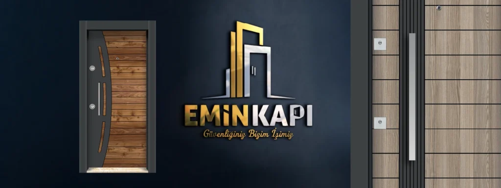
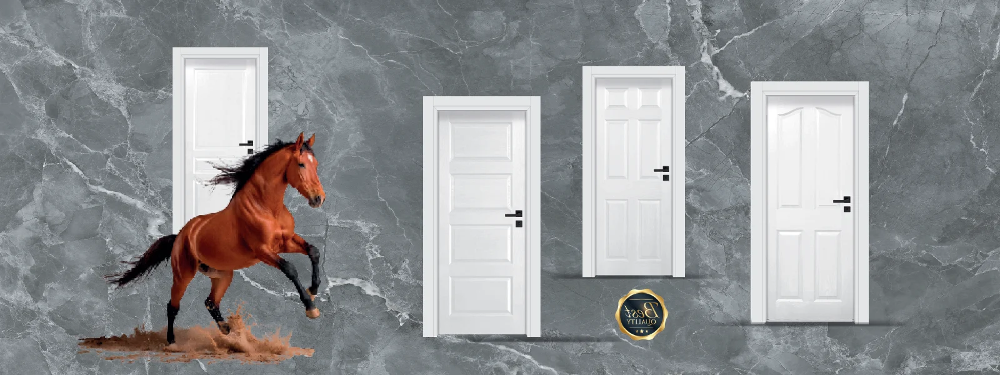

Oda Kapısı Fiyatları
Bu sayfa yalnızca fiyatı neyin etkilediğine odaklanır — model karşılaştırması ve “en çok satan” listeleri diğer rehberlerde.
Bu sayfanın işi: ölçü, yüzey, kasa ve aksesuarın maliyeti nasıl şekillendirdiğini anlatmak. Model seçimi için oda kapı modelleri; paket/fiyat senaryoları için ev iç kapı modelleri ve fiyatları; showroom tercihi için en çok tercih edilenler.
Osmaniye’de oda kapısı fiyatı arıyorsanız bilmeniz gereken ilk nokta: doğru teklif, kapı ölçüsü ve seçilen seri netleşmeden verilemez. Bu sayfada sahte veya “başlayan fiyat” rakamları yok; keşif sonrası yazılı net teklif sunuyoruz.
İç oda kapılarında sık tercih edilen seriler — lake, camlı, lüks ve Amerikan panel — malzeme, yüzey işçilik ve detay seviyesine göre farklı maliyet aralıklarına girer. Detaylı modeller için MDF iç oda kapısı ve lake iç kapı sayfalarına bakabilirsiniz.
Fiyatı belirleyen 5 kalem
- Ölçü ve adet — standart dışı yükseklik/genişlik ve dairedeki kapı sayısı.
- Yüzey — Amerikan panel, melamin, lake veya kompozit; lake katman sayısı maliyeti etkiler.
- Kasa tipi — geçmeli kasa derinliği ve duvar kalınlığı.
- Cam / detay — camlı üretim, özel RAL ve lüks aksesuar.
- Montaj ve saha — keşif sonrası netleşen montaj koşulları.

Lake
Lake oda kapısı
Lake yüzey; boya katmanları ve yüzey kalitesiyle öne çıkar. Renk seçimi ve ölçü fiyatı belirler. Model ve showroom bilgisi: lake kapı sayfası.
Camlı & lüks
Camlı ve lüks iç kapı
Camlı modeller ışık geçişi ve çerçeve detayıyla; lüks seride premium kaplama ve özel yüzeylerle fiyatlanır. Ölçü ve model seçimi olmadan net rakam verilemez.
Camlı seriler Lüks seriler

Amerikan panel
Amerikan panel oda kapısı
Salon, yatak odası ve koridorlarda sık tercih edilir. Panel tipi, kaplama ve ölçü teklifi şekillendirir. Tüm MDF serileri: iç oda kapısı.
0542 236 236 5 İletişimSık sorulanlar
Oda kapısı fiyatları hakkında
Oda kapısı fiyatı neden ölçüye bağlı?
Her kapı boşluğu farklıdır; seri ve kaplama seçimi de maliyeti değiştirir. Keşif sonrası net teklif hazırlanır — sabit liste fiyatı yok.
Hangi seriyi seçmeliyim?
Lake pürüzsüz boyalı yüzey; camlı ferahlık; lüks premium görünüm; Amerikan panel klasik–modern denge için tercih edilir. Showroom’da birlikte seçeriz.
Nasıl teklif alırım?
0542 236 236 5 veya iletişim formu. Adnan Menderes Mah. Trafo Cd. No: 6/A, Osmaniye Merkez.
Teklif
Oda kapısı için keşif planlayın
Ölçü ve model netleşince teklif hazırlanır. Emin Kapı — Osmaniye.